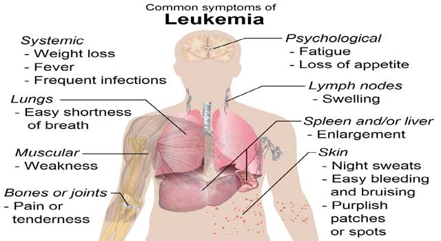

Leukemia is a cancer of blood cells (and therefore sometimes referred to as blood cancer).While the exact cause(s) of leukemia is not known, risk factors have been identified, including radiation exposure and exposure to benzene.Commonsymptoms of chronic or acute leukemia may include pain in the bones or joints,swollen lymph nodes that usually don't hurt,fevers or night sweats,feeling weak or tired,bleeding and bruising easily,frequent infections,discomfort or swelling in the abdomen,weight loss or loss of appetite.
Leukemias are grouped by how quickly the disease develops (acute or chronic) as well as by the type of blood cell that is affected (lymphocytes or myelocytes). The four main types of leukemia include acute lymphocytic leukemia (ALL), chronic lymphocytic leukemia (CLL), acute myelocytic leukemia (AML), and chronic myelocytic leukemia (CML).